Ghost Play - A Violin-Playing Robot using Electromagnetic Linear Actuators
ABSTRACT
Ghost Play is a violin-playing robot that aims to realize bowing and fingering similar to human players. Existing violin-playing machines have faced various problems concerning performance techniques owing to constraints imposed by their design. Bowing and fingering that require accurate and high-acceleration movement (e.g., a spiccato, tremolo, and glissando) are essential but challenging. To overcome this problem, Ghost Play is equipped with seven electromagnetic linear actuators, three for controlling the bow (i.e., the right hand), and the other four for controlling the pitch on each string (i.e., the left hand). The violin-playing robot is mounted with an unmodified violin bow. A sensor is attached to the bow to measure bow pressure. The control software receives a time series of performance data and manipulates the actuators accordingly. The performance data consists of the bow direction, bow speed, bow pressure, pitch, vibrato interval, vibrato width, and string to be drawn. We also developed an authoring tool for the performance data using a graphic user interface. Finally, we demonstrated Ghost Play performing bowing and fingering techniques such as a spiccato, tremolo, and glissando, as well as a piece of classical music.
Author Keywords
Instrument-playing robot, Violin, Electromagnetic Linear Actuator
CCS Concepts
Applied computing → Sound and music computing
Computer systems organization → Robotics
Introduction
Various machines that play musical instruments have been developed. One of the underlying motivations for developing instrument-playing robots that can play an unmodified instrument in a similar way to human players is to deepen our understanding of the mechanism of the instrument and the act of playing it. The knowledge obtained from such research would be valuable for instrument makers and players. Furthermore, the development of instrument-playing robots is relevant to the computational exploration of music because it expands the boundaries of music to be explored.
Violin is a challenging instrument that has been subjected to automatic playing by machines [1]. Bowing and fingering (i.e., the use of the right and left hands) are the two essential elements of playing the violin.
With regard to the bowing mechanism, rotating wheels were often used in existing machines, from Violano Virtuoso in the early twentieth century [2] to recently developed Hathaani [3]. In violin MUBOT [4], the bow was reciprocated linearly by an arm consisting of a pantograph mechanism, while the violin was rotated around its long axis. In Ro-Bow [5], the bow movement was limited to only a linear back-and-forth motion. With these mechanisms, bowing techniques that required high-acceleration movement or vertical control of the bow, such as a spiccato and tremolo, were difficult to perform. Multi-articulated arms for the bowing mechanism have been developed [6] [7]. Theoretically, such a mechanism has sufficient degrees of freedom to imitate various bowing techniques. However, it is challenging to control the bow using multi-articulated arms. In addition, the equipment tends to generate loud noises, which may interfere with the performance.
With regard to the fingering mechanism, most previous violin-playing machines focused on discrete pitch control, although some were able to play vibrato. In other words, continuous pitch changes, which are indispensable for playing glissando and portamento, have not been addressed. Playing these techniques requires rapid movement of the left-hand element. An exception to this is Hathaani [3], which was designed to play a gamaka (i.e., a pitch-based embellishment used in Carnatic music) on the D string. We also note that some robotic guitar-like instruments, such as GuitarBot [8] and MechBass [9], used linear motion systems to move the fretting units along the strings.
As described above, some essential techniques, such as a spiccato, tremolo, and glissando, have received little attention owing to the constraints imposed by the machine design. In this study, we developed a novel violin-playing robot named Ghost Play1. Figure 1 and Figure 2 show an overall and close-up view of the proposed robot. The robot is equipped with seven linear electromagnetic actuators. Four actuators are used for fingering (i.e., to imitate the left hand), while the other three are used for bowing (i.e., to imitate the right hand). The electromagnetic linear actuators that we used can provide high thrust despite their quietness. This mechanical structure enables accurate and high-acceleration movements. As a result, Ghost Play can perform bow movement and pitch control similar to human players from a mechanical viewpoint. Another feature of our robot is that it can use a standard violin and bow without modification, except that a sensor for measuring the bow pressure is attached to the bow, and a pickup microphone is attached to the violin.

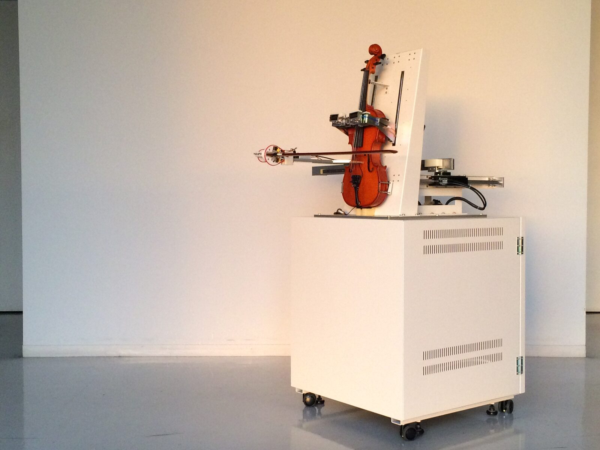
Overall view of Ghost Play

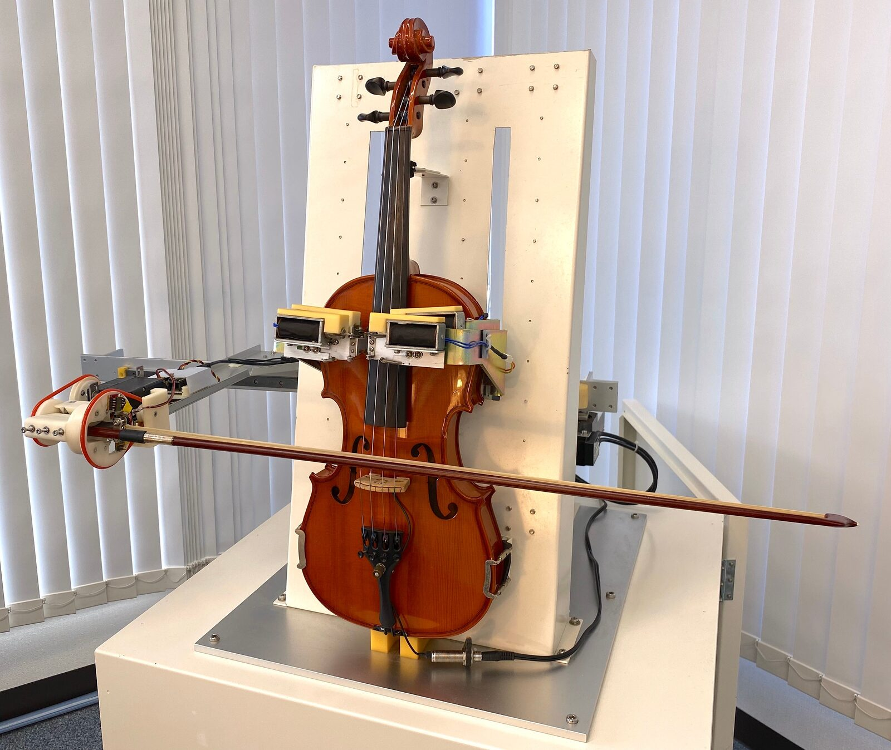
Close-up view of Ghost Play
Our robot can continuously control the bow speed, bow pressure, and pitch. The bow movement is not limited to the horizontal but can also be vertical to the fingerboard. In other words, Ghost Play can control the bow off the string while playing, in addition to backward and forward linear motions. This bowing mechanism enables the robot to play a spiccato. The bow-bridge distance is fixed mechanically in the current hardware design. Although the bow tilt can be changed mechanically, the current control software keeps it constant. Hence, two of the three essential bowing parameters [10] [11] can be controlled by our robot. With regard to fingering, Ghost Play can control the pitch continuously, even while keeping the string pressed down. This fingering mechanism enables the robot to play glissando and portamento. It is also possible to have the robot play a piece in just intonation or using microtones, although we did not perform in this work.
Ghost Play plays the violin following a given performance instruction. More precisely, the control software written in Max and JavaScript receives a time series of performance data, makes a motion plan, and manipulates the actuators accordingly. The basic performance data consists of the bow direction, bow speed, bow pressure, pitch, and strings to be drawn. We can add a vibrato interval and width to the performance data.
The main achievements of this work are as follows:
We developed a novel violin-playing robot named Ghost Play equipped with electromagnetic linear actuators, aiming to perform bowing and fingering as done by human players.
The robot can control the bow speed, bow pressure, and pitch continuously according to a given time series of the performance data.
We developed a simple authoring tool for performance data.
We demonstrated Ghost Play playing some essential but challenging techniques (specifically, a spiccato, tremolo, and glissando) as well as a piece of classical music.
Terminology
Before describing our robot, we will introduce some terminology regarding the violin and bow used in this study (see Figure 3). The direction of the bow relative to the violin can be represented by three angles: inclination, skewness, and tilt [12]. The point at which the bow hair and string come in contact is called a contact point. The bow-bridge distance is the distance between the contact point and the bridge. The bow speed, or the bow velocity, is the speed at which the bow moves back and forth to draw the string. The force/pressure with which the bow presses the string at the contact point is called the bow force/pressure. The frog is the bottom part of the bow that encloses the mechanism responsible for tightening and holding the bow hair. The tip is the top end of the bow. A normalized bow position is defined as the distance between the contact point and frog normalized by the length of the bow hair , as shown in Figure 4. The domain of is .

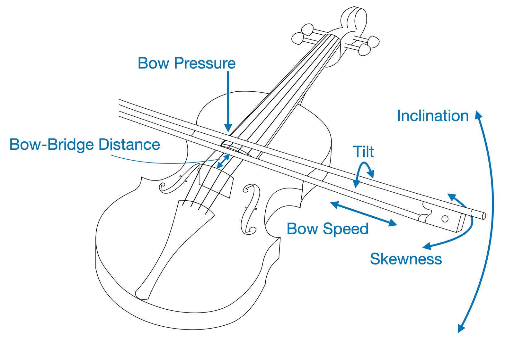
Terminology regarding the violin and bow. Adapted from reference [12].

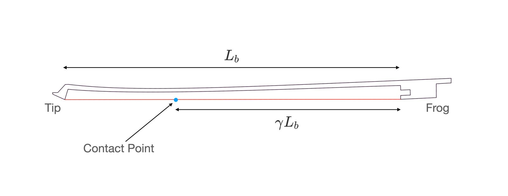
Schematic of the normalized bow position. The bow hair is shown by the red line.
Hardware
In this section, we describe the hardware of Ghost Play. As shown in Figure 1 and Figure 2, the violin installed on a white box is surrounded by electromagnetic linear actuators that play the role of human hands. One can observe the robot playing the violin and bow without any obstructions. A sensor is attached to the bow to measure the bow pressure, and a pickup microphone for calibration and monitoring is attached to the violin. No other modifications were made to the instrument. The box contains an amplifier, motion controller cards for the actuators, a microcontroller for the bow pressure sensor (Arduino), a microcontroller for the string pressing unit (AVR ATmega8), and a computing machine (Windows PC). Figure 5 illustrates the hardware architecture. Each individual component is explained in the next section.

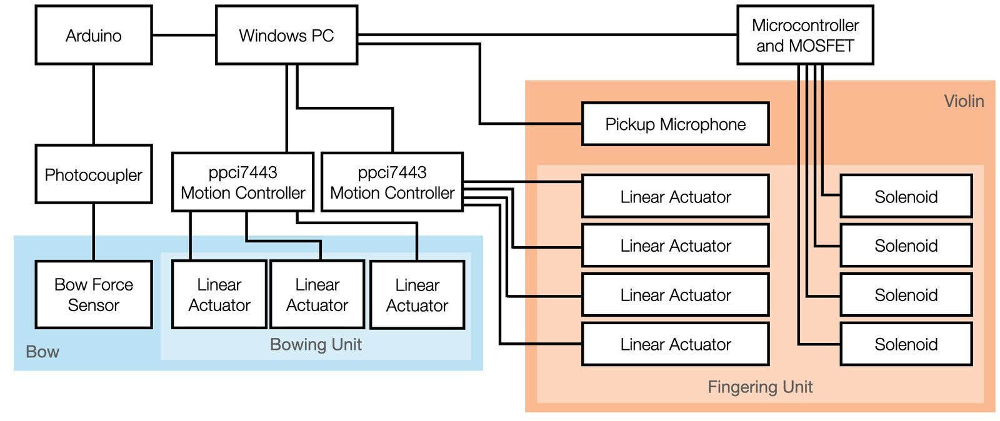
Hardware architecture
Linear Actuator
Ghost Play is equipped with seven electromagnetic linear actuators: three are used for bowing and the other four are used for finger traversal on each string. Figure 6 shows a back view of Ghost Play. We used a linear shaft drive SHM-165 manufactured by Miki Pulley Co. Ltd. as the actuators. It is a cylindrical linear motor system in which a coil wound around the shaft with permanent magnets converts the electromagnetic force into thrust. This model has a 16 mm diameter shaft with a maximum thrust of 117 N and a maximum speed of 4,000 mm/s. We used two motion controller cards, PPCI7443, manufactured by Nippon Pulse Motor, to control the actuators. A single motion controller is connected to a peripheral component interconnect (PCI) bus and can control four linear actuators.

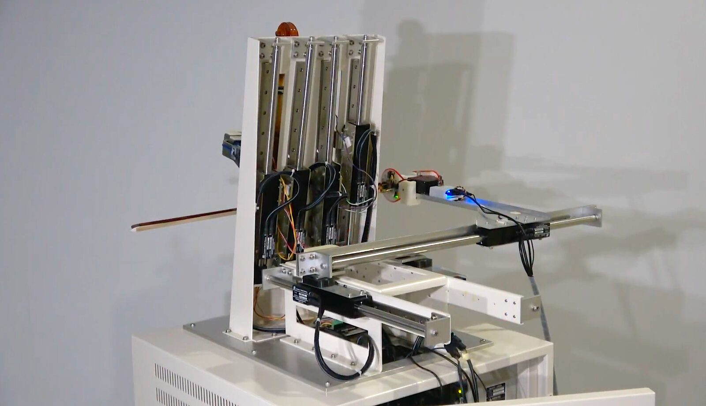
Back view of Ghost Play. Three linear actuators are used for bowing, and four are used for finger-traversal on each string.
Bowing Unit
The bowing control unit consists of three electromagnetic linear actuators. We refer to each actuator as BowBaseLeft, BowBaseRight, and BowArm. Figure 7 illustrates the connections between the three actuators. The bow is held by BowArm in a cantilever configuration. The BowArm is connected on top of the BowBaseLeft and BowBaseRight via a rotary and linear bearing. This structure enabled the robot to perform the following:
Changing the bow inclination for string-crossing
Keeping the bow skewness at the right angle
Moving the bow vertically to the fingerboard on and off the string
Controlling the bow pressure
Controlling the bow speed
Although we developed the hardware to tilt the bow, we did not implement the software to change it during the performance. In this study, the bow tilt was controlled to be a constant. Moreover, the robot can play multiple stops from a mechanical viewpoint. However, this technique was not used in this study.
One limitation of the current structure is that the bow-bridge distance cannot be changed during the performance. According to previous studies, the essential bowing parameters are the bow speed, bow pressure, and bow-bridge distance [10] [11].

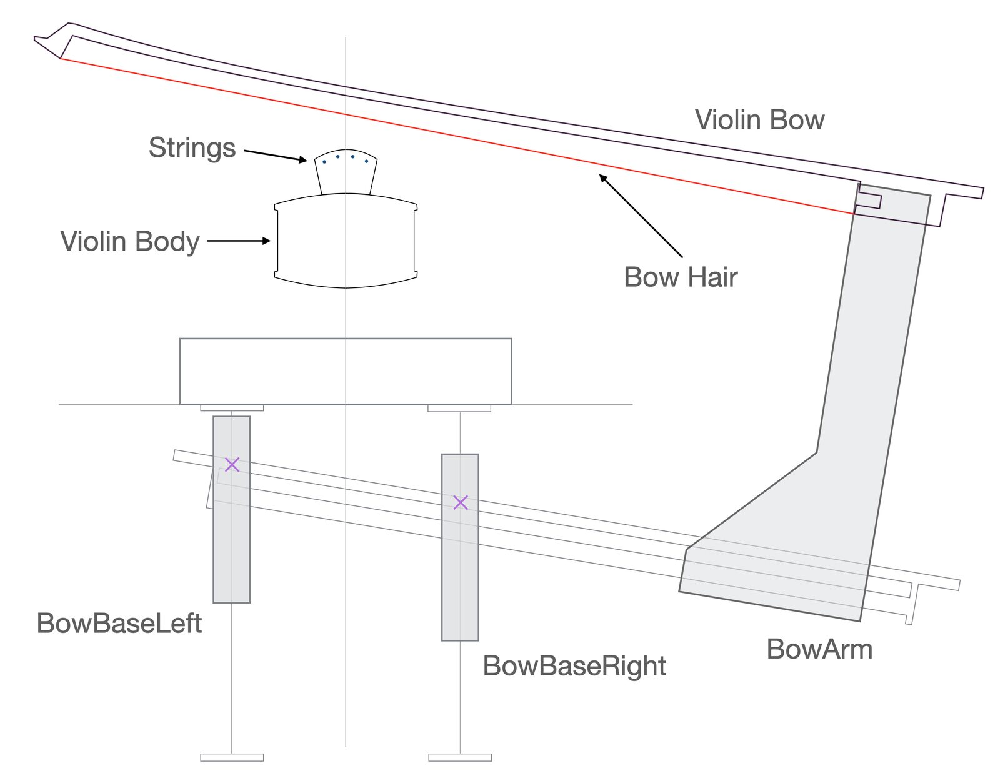
Schematic of the bowing unit. Three linear actuators for bowing are viewed from above. Each actuator is referred to as BowBaseLeft, BowBaseRight, and BowArm.
Bow Pressure Sensor
A bow pressure sensor was implemented, as proposed in a previous study [13]. This sensor consists of a metal strip with two strain gauges glued on both sides. The metal strip is in contact with the bow hair through a cylindrical piece of wood and bends in response to the bow deflection. We can estimate the bow pressure from the bow position and the bending of the metal strip after a calibration procedure. The implemented bow pressure sensor is attached to the bow frog without modifying the bow, as shown in Figure 8. A microcontroller (Arduino) receives signals from the sensor. A photocoupler electrically isolates the power supply to the actuators and one of the sensors to avoid disturbance of the sensor measurements by electrical noise from the actuator.

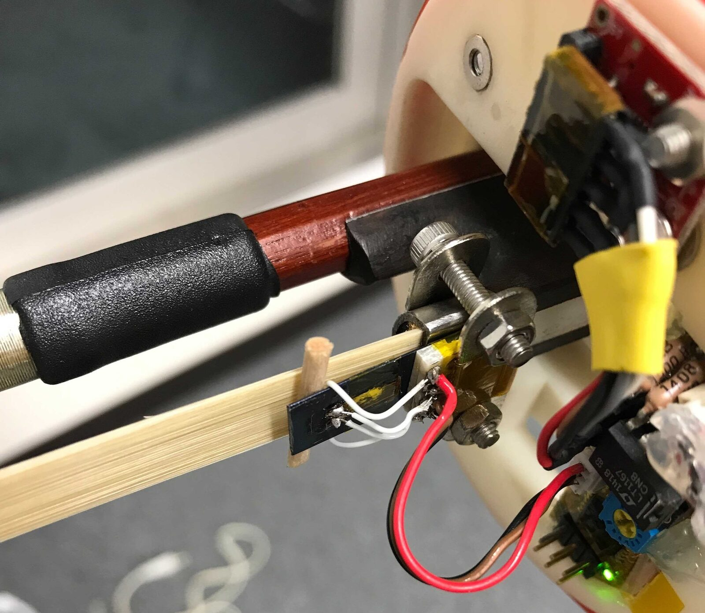
Bow pressure sensor image
Fingering Unit
One electromagnetic linear actuator is used for finger traversal on each string, as shown in Figure 6. Hence, four actuators are used for fingering.
Figure 9 shows the string-pressing units for each string. One string pressing unit is mounted on each linear actuator and moves along the string using the actuator. The finger press unit consists of a solenoid, springs, wires, and bearings. The part that touched the string, referred to as a finger, is covered with vinyl and polyurethane tubing to enable smooth position changes while keeping the string pressed down. The solenoid moves the finger in contact with and away from the string, controlled by an electrical circuit consisting of a microcontroller (AVR ATmega8) and metal-oxide-semiconductor-field-effect transistors (MOSFETs).
All pairs of the linear actuator and string pressing unit can operate independently without interfering with each other almost everywhere. One exception is when two pairs are positioned very close to the nut on two adjacent strings. The string pressing unit should be reduced in size to resolve this limitation.

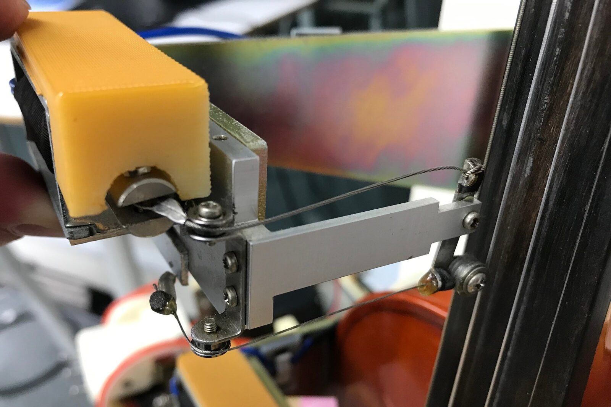
String pressing unit image
Software
We developed the control software mainly in Max. JavaScript was used for motion planning and visualization, and MaxCpp2 was used to communicate with the motion controller cards. Figure 10 shows the Max patch (i.e., program in Max) of the main controller. The control software working is explained as follows.
First, the control software receives a time series of performance data at intervals of 10 ms. The basic performance data at each time consists of the following data:
Bow direction (i.e., up or down)
Bow speed
Bow pressure
String to be drawn (i.e., G, D, A, or E)
Pitch
The vibrato interval and width can be added. An example of the performance data is presented in the Appendix. The control software then creates a motion plan. Note that we can manipulate the actuators by sending a time series of positions where the moving parts should be located at each instant. Figure 11 shows the Max patch of actuator control. Finally, the motion plan is sent to the controller cards to manipulate the actuators. In addition, the string pressing instruction is sent to the microcontroller (AVR ATmega8) to control the solenoids.

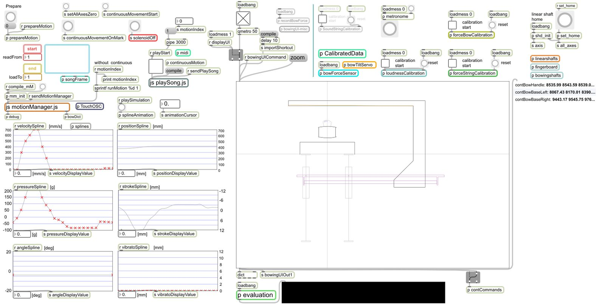
Max patch of the main controller

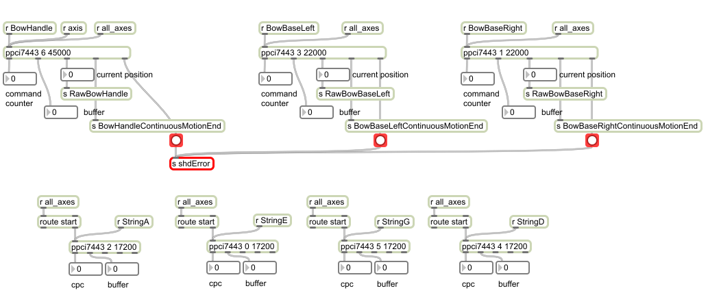
Max patch of the actuator control
It can be noted that the time interval of 10 ms is based on the proposed design but not the limitation imposed by the actuator or the motion controller card. Even though this interval is seemingly sufficient, it is possible to further reduce the interval.
Calibration
Calibration must be performed before playing to identify the position of each string, measure the relationship between the bow position and bow pressure, and confirm the correspondence of the position of the finger (i.e., the string-pressing unit) and pitch. The bow pressure sensor also requires calibration. These are affected by various factors, such as the shape and setup of the violin and bow, the type of the strings and bow hairs, the way the violin and bow are mounted, and the humidity. Hence, calibration is required every time any relevant condition changes to maintain accurate control. We used a bow pressure sensor and pickup microphone during the calibration process.
First, we conducted the calibration procedure of the bow pressure sensor according to [13]. This enabled us to estimate the pressure at the contact point from the measured value.
Next, the robot identified the bow location and the direction in which it touched the strings. When the bow pressure exceeded a certain threshold, we determined that the bow hair was in contact with the string. Which string is being played can be determined based on the fundamental frequency (F0) of the sound recorded by the pickup microphone. In this study, we used fzero~ [14], a Max object for F0 estimation. The range of the inclination angle at which the bow touched two adjacent strings was manually identified. Note that double stop was not implemented in this study, although it could be. From this observation, we determined the condition of the bow inclination at which the bow touched each string. Figure 12 shows the correspondence between the bow inclination and the string touched by the bow at that angle.

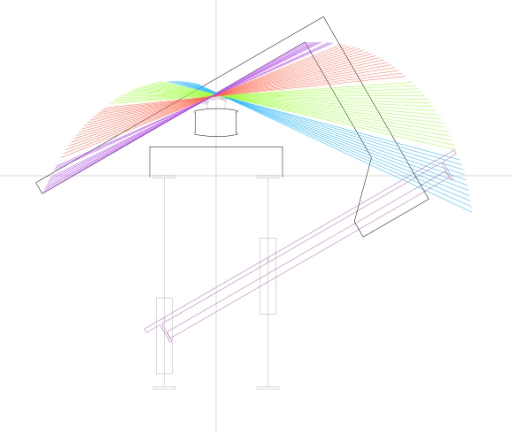
Correspondence of the bow inclination and string. The G, D, A, and E strings are mapped to blue, green, red, purple, respectively.
Moreover, the robot measured the relationship between the bow position and bow pressure. Explicitly what is to be measured in the calibration process is the bow pressure at the selected bow positions and displacements. The bow pressure was measured using the sensor described above. We will describe how to estimate the bow displacement at a given bow pressure and bow position later in this paper.
Finally, the robot checked the mapping of the finger position to the pitch. We measured the F0 of the sound recorded by the pickup microphone while changing the position of the string-pressing unit. Using the results from this process, we can determine the finger positions to be used in the performance.
Motion Planning
The data that should be sent to the motion controller cards to manipulate the actuators is a time series of positions at an interval of 10 ms where the moving parts should be located. Below, we will explain how to calculate the desired position of the moving parts of the actuators at each time instant from the given performance data.
Fingering
Because the mapping of the pitch to the finger position is obtained during the calibration process, it is a straightforward process to determine the position of the moving part of the actuator for fingering that corresponds to a given pitch.
Bowing
The configuration of the moving parts of the actuators for bowing can be calculated geometrically from the location and direction of the bow. This means that we need to calculate the location and direction of the bow at each instant from the given performance data. Specifically, we need to determine the bow inclination, normalized bow position, and vertical displacement of the bow from the string.
First, using the mapping of the string to be drawn to the bow inclination obtained during the calibration process, we determined the desired bow inclination from the given performance data. We note that a range of the bow inclination corresponds to each string. Thus, we chose the center value during a single note and smoothly interpolated the bow inclination at the time of string-crossing.
Then, we determined the bow position at each time instant by accumulating a series of bow speeds, starting from the initial bow position. Here, we refer to the location of the contact point (i.e., the point where the string and bow hair contact) in the direction of the bow as the bow position.
Finally, given the calculated bow inclination and position, we determined the vertical displacement of the bow from the string. When no string is drawn, we need not pay attention to this quantity. Thus, we focus on the displacement of the bow pressed into the string, which is explained in the next section.
Bow Displacement
We need to determine the desired displacement of the bow perpendicular to the bow hair denoted by when the following two quantities are given:
the bow force (equivalently, the pressure at which the bow presses the string)
the normalized bow position
Note that was introduced in Terminology. Here, we set the origin of the bow displacement such that when the bow hair and string are in contact without exerting any force on each other. For this purpose, we can use the observed values of at selected values of and using the bow pressure sensor. Therefore, we can infer the relationship between these quantities using the observed data. Then, it becomes possible to estimate the bow displacement that is necessary to apply the force at the normalized bow position .

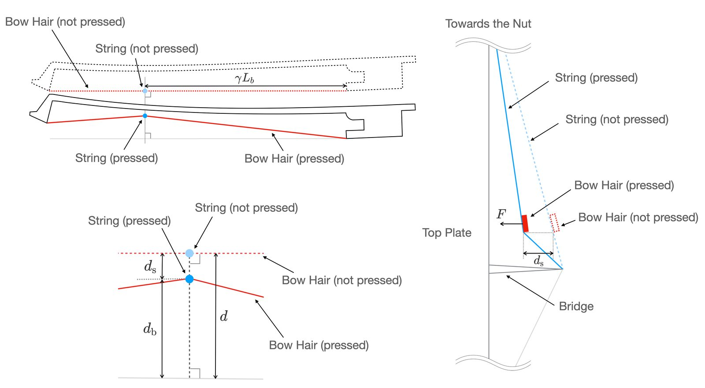
Schematic of the bow displacement
The displacement is caused by two factors: the deflection of the bow hair and that of the string (see Figure 13):
According to [13], can be written as
where and denotes the tension and length of the bow hair, respectively. represents the transverse stiffness of the bow. We suppose that can be expressed as follows:
where denotes the transverse stiffness of the string. is an index that represents the string that is drawn. Note that stiffness is intrinsic to each string. Therefore, we obtain the following relationship.
Using the non-linear least squares fitting, we can infer the unknown parameters, namely , and from the observed data. Figure 14 shows the observation results and the inferred approximation surface. Because all unknown parameters have been inferred, we can determine the bow displacement that is necessary to apply the force at the normalized bow position .

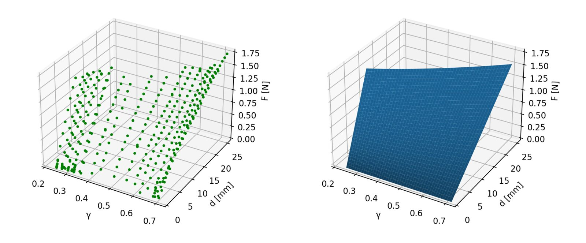
Relation between the normalized bow position , displacement , and force . The left panel represents the observed data on the D string, while the right one shows the inferred approximate surface.
Authoring Tool
As manual preparation of performance data for every 10 ms intervals is a time-consuming task, we developed a simple authoring tool with a GUI using TouchOSC3. Figure 15 shows the GUI of the application.
In this application, a user can edit a time series of the performance data during a single note. A user gives the duration, string to be drawn (i.e., G, D, A, or E), pitch, bow direction (i.e., up- or down-bow), and vibrato speed. In addition, the user can provide a value for the bow speed, bow pressure, and vibrato depth at any three or more different times. Then, the application generates time series of these quantities at intervals of 10 ms during the note using cubic spline interpolation. The user can concatenate adjacent notes created in this manner. The user can also insert a rest instead of a note. We note that the pitch should be constant during a single note in the current application. When the user wants to vary the pitch during a "note", it is possible to edit the data manually using other tools afterward. Moreover, it is the user's responsibility to maintain consistency at the boundaries of adjacent notes in the current implementation.
Another function of the application is to let the robot play a created passage. One notable use of this application is that a user can easily check the quality of a short passage by hearing the performance. This is helpful because the quality of a given curve of the bow speed, bow pressure, and vibrato depth is difficult to evaluate without hearing. It is practically difficult to create performance data for a long piece of music using only this application. However, a user can use the notes created using the application as building blocks to author performance data on a long musical piece using other tools.

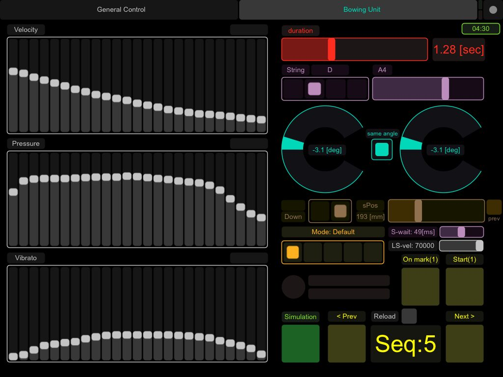
GUI of the authoring tool for performance data
Performance
Bowing and Fingering Techniques
Ghost Play can play various bowing and fingering techniques. Video 1, Video 2, and Video 3 show the robot playing a spiccato, tremolo, and glissando, respectively.
Spiccato
Tremolo
Glissando
Musical Piece
Moreover, Ghost Play can play musical pieces by combining various performance techniques.
Video 4 shows the robot playing a piece of classical music, Pavane pour une infante défunte (Pavane for a Dead Princess) by Maurice Ravel [15], accompanied by digital piano. Here, we implemented a program in Max (i.e., Max patch) that synchronizes violin performance with MIDI signals from the digital piano.
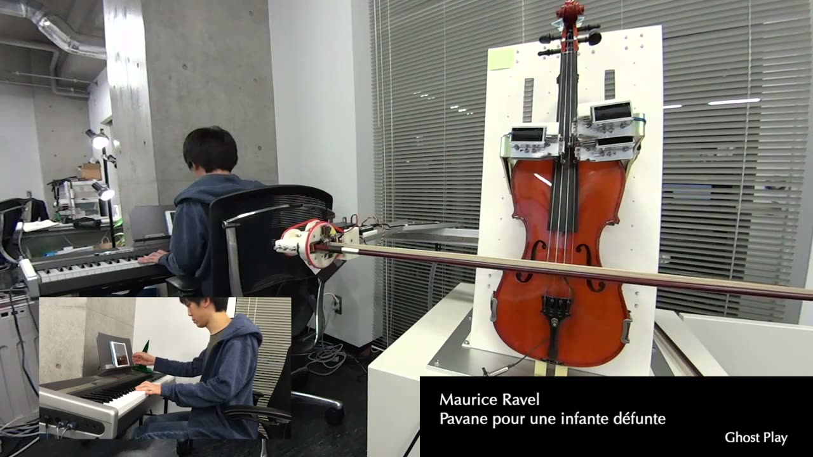
▶Musical piece
Future Work
Owing to constraints imposed by the hardware design, the robot cannot change the bow-bridge distance during a performance. According to previous studies [10] [11], the bow speed, bow pressure, and bow-bridge distance are essential bowing parameters that affect the tone. Extending the hardware to control the bow-bridge distance is a future task to improve the sound quality. Moreover, because the current robot is equipped with only one string-pressing unit for each string, it is difficult to play techniques such as trills, artificial harmonics, and a pizzicato. The fingering unit needs to be enhanced to enable the robot to perform these techniques.
Some performance techniques remain unimplemented, although it was possible from a mechanical viewpoint. For example, we did not generate performance data for multiple stops, natural harmonics, or a one-bow staccato. In addition, string-crossing was not necessarily smooth; hence, it had to be improved, both for slurred one and one with separate bows. Moreover, we used only the equal temperament, while it was a possible extension to use only an intonation. Furthermore, we did not explicitly consider the bounce of the bow in this study. Some advanced bowing techniques, such as ricochet and sautillé, may require explicitly considering bow bouncing.
Real-time feedback of sensor signals and recorded sounds to attain performance control is a promising challenge. The bow pressure sensor and pickup microphone were used for calibration and monitoring in this study. The data obtained from these are invaluable for improving the sound quality and for consistently performing difficult techniques.
Another significant challenge is obtaining high-quality data. As we can see in Video 4, the performance of our robot was not technically skilled and lacked musicality. The essential difficulty lies in the generation of the performance data. Hand-crafted performance data tends to be of low quality. One way to solve this problem is to develop algorithms to generate performance data. To evaluate a given algorithm, a method to quantitatively evaluate the sound quality and skill of the performance technique is needed, which is another challenging task. Another way is to learn from human violinists. First, we need to observe various parameters, such as bow movement, bow pressure, and fingering, while violinists play, which is not a trivial task [16][17]. Fingering may be automatically transcribed from recordings [18]. Then, the performance data for the robot is extracted from the observed data, where we may need to adapt the observed data to the robot. Considering the individual differences of each instrument, a more detailed calibration may be needed to apply the performance data obtained in this way. Once a large amount of quality data is collected, developing a machine learning model using these data is also promising.
Conclusions
We developed a new violin-playing robot named Ghost Play that aims to perform bowing and fingering as done by human players. For this purpose, we equipped the robot with electromagnetic linear actuators: three for bow movement and four for finger traversal. The strings were pressed using solenoids. An unmodified violin and bow were mounted on Ghost Play. A pickup microphone and bow pressure sensor were attached to the violin and bow, respectively. Ghost Play can control the bow speed, bow pressure, and pitch, while the bow-bridge distance is fixed. The control software written in Max receives a time series of performance data, including the bow speed, bow pressure, and pitch. We can add a vibrato interval and a vibrato width. The control software create a motion plan from the performance data and manipulate the actuators and solenoids accordingly. We also developed an authoring tool for performance data with a GUI using TouchOSC. It can generate a time series of the bow speed, bow pressure, and pitch at intervals of 10 ms using spline interpolation from a few data points given by a user. Finally, we demonstrated Ghost Play playing several techniques, including a spiccato, tremolo, and glissando, as well as a piece of classical music.
Links
The website of this project is https://ghostplay.dev.
Acknowledgments
The early stage prototype of Ghost Play was developed under the financial support from the IPA Mitoh Program of the Information-Technology Promotion Agency, Japan (IPA).
Compliance with Ethical Standards
This work complies with the NIME ethical standards. This study did not involve human participants or animals. This study did not include any personal data of individuals.
Appendices
Data Structure of Performance Data
The data format of the performance data used in this study is JSON. It can be divided into bowing and fingering data.
The following is an example of bowing data.
{
"duration": 2.5,
"bowDirection": "up",
"bowSpeed": [
37.078651785850525
...
],
"bowPressure": [
27.808988094329834
...
],
"initialBowPosition": 323.25,
"bowInclination": [
12.469518184661865,
...
]
}The following is an example of fingering data.
{
"string": "A",
"pitch": 79, // MIDI note
"vibratoDepth": [
0,
...
],
"vibratoSpeed": 74,
},
"solenoid": {
"G": 0,
"D": 0,
"A": 1,
"E": 0
}Here, we can provide a time series of the pitch (in Hz) with an interval of 10 ms instead of using a MIDI note. This enables the robot to play glissando and microtones.
Footnotes
An early prototype of Ghost Play was demonstrated by one of the authors (M.F.) as part of a talk at TEDxSeeds 2011. The essential extensions have been made since that time: 1. The prototype used electromagnetic linear actuators only for bowing, while the current robot uses them both for bowing and fingering; 2. The bow pressure sensor present in the current robot was not used in the prototype. In other words, the bow pressure was not controlled in the prototype; 3. We redesigned and rewrote the control software in Max and JavaScript from scratch.
↩- ↩
- ↩
Citations
- ↩Kapur, A. (2005). A history of robotic musical instruments. 2005 International Computer Music Conference (ICMC).
- ↩Kinter, M. (1984). Mills Violano-Virtuoso: The Famous Sell-Playing Violin and Piano :How It Works, How to Service and Rebuild It, Together With a Fascination Collection. Vestal Press.
- ↩Sankaranarayanan, R., & Weinberg, G. (2021, April 29). Design of Hathaani - A robotic violinist for Carnatic music. Proceedings of the 2021 International Conference on New Interfaces for Musical Expression (NIME).
- ↩Kajitani, M. (1989). Development of musician robots. Journal of Robotics and Mechatronics, 1(1), 254–255.
Goldstein, S. (2015). RO-BOW - A kinetic sculpture that plays a violin by Seth Goldstein. Youtube; https://www.youtube.com/watch?v=EPTUM2_bxnQ.
↩- ↩Kusuda, Y. (2008). Toyota’s violin-playing robot. Industrial Robot: An International Journal, 35(6), 504–506.
- ↩Shibuya, K., Ideguchi, H., & Ikushima, K. (2012). Volume control by adjusting wrist moment of violin-playing robot. International Journal of Synthetic Emotions (IJSE), 3(2), 31–47.
- ↩Sankaranarayanan, R., & Weinberg, G. (2021, April 29). Design of Hathaani - A robotic violinist for Carnatic music. Proceedings of the 2021 International Conference on New Interfaces for Musical Expression (NIME).
- ↩Singer, E., Larke, K., & Bianciardi, D. (2003). LEMUR GuitarBot: MIDI Robotic String Instrument. Proceedings of the 2003 Conference on New Interfaces for Musical Expression (NIME), 188–191.
- ↩Murphy, J. W., McVay, J., Kapur, A., & Carnegie, D. A. (2013). Designing and Building Expressive Robotic Guitars. NIME, 557–562.
- ↩Schelleng, J. C. (1973). The bowed string and the player. The Journal of the Acoustical Society of America, 53(1), 26–41.
- ↩Schoonderwaldt, E. (2009). The violinist’s sound palette: spectral centroid, pitch flattening and anomalous low frequencies. Acta Acustica United with Acustica, 95(5), 901–914.
- ↩Schoonderwaldt, E., & Demoucron, M. (2009). Extraction of bowing parameters from violin performance combining motion capture and sensors. The Journal of the Acoustical Society of America, 126(5), 2695–2708.
- ↩Schelleng, J. C. (1973). The bowed string and the player. The Journal of the Acoustical Society of America, 53(1), 26–41.
- ↩Schoonderwaldt, E. (2009). The violinist’s sound palette: spectral centroid, pitch flattening and anomalous low frequencies. Acta Acustica United with Acustica, 95(5), 901–914.
- ↩Demoucron, M., Askenfelt, A., & Causse, R. (2009). Measuring bow force in bowed string performance: Theory and implementation of a bow force sensor. Acta Acustica United with Acustica, 95(4), 718–732.
- ↩Demoucron, M., Askenfelt, A., & Causse, R. (2009). Measuring bow force in bowed string performance: Theory and implementation of a bow force sensor. Acta Acustica United with Acustica, 95(4), 718–732.
- ↩Zbyszynski, M., Zicarelli, D., & Collecchia, R. (2013). fzeroundefined̃: Fundamental estimation for Max 6. Proceedings of the International Computer Music Conference.
- ↩Demoucron, M., Askenfelt, A., & Causse, R. (2009). Measuring bow force in bowed string performance: Theory and implementation of a bow force sensor. Acta Acustica United with Acustica, 95(4), 718–732.
- ↩Ravel, M. (1899). Pavane pour une infante défunte. E. Demets.
- ↩Schelleng, J. C. (1973). The bowed string and the player. The Journal of the Acoustical Society of America, 53(1), 26–41.
- ↩Schoonderwaldt, E. (2009). The violinist’s sound palette: spectral centroid, pitch flattening and anomalous low frequencies. Acta Acustica United with Acustica, 95(5), 901–914.
- ↩Young, D., & Deshmane, A. (2007). Bowstroke Database: A Web-Accessible Archive of Violin Bowing Data. Proceedings of the 7th International Conference on New Interfaces for Musical Expression (NIME), 352–357.
- ↩Volpe, G., Kolykhalova, K., Volta, E., Ghisio, S., Waddell, G., Alborno, P., Piana, S., Canepa, C., & Ramirez-Melendez, R. (2017). A Multimodal Corpus for Technology-Enhanced Learning of Violin Playing. Proceedings of the 12th Biannual Conference on Italian SIGCHI Chapter.
- ↩Maezawa, A., Itoyama, K., Komatani, K., Ogata, T., & Okuno, H. G. (2012). Automated violin fingering transcription through analysis of an audio recording. Computer Music Journal, 36(3), 57–72.